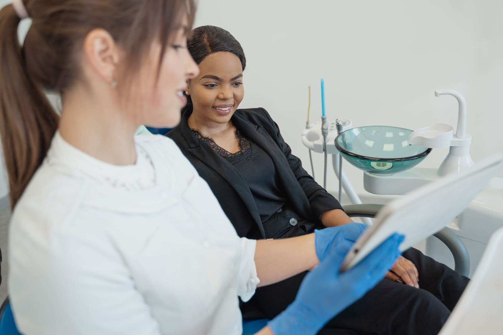
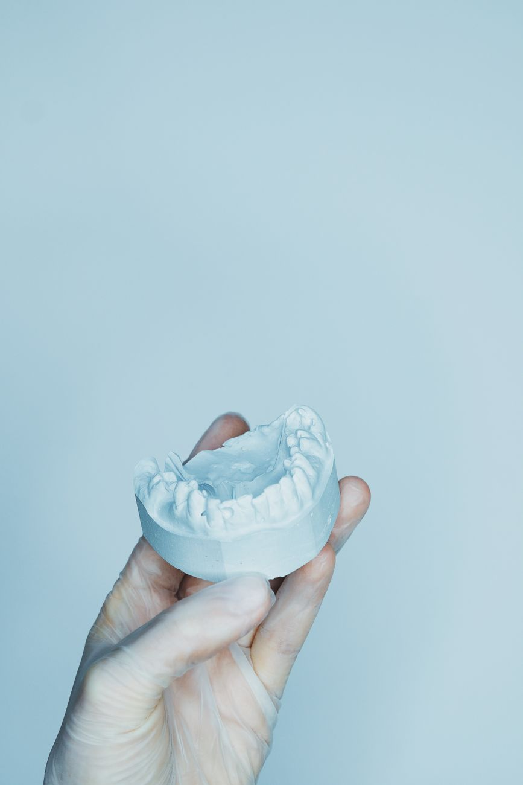
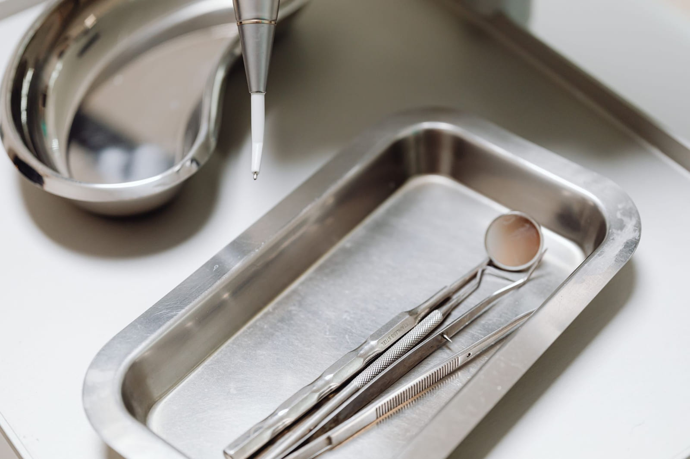
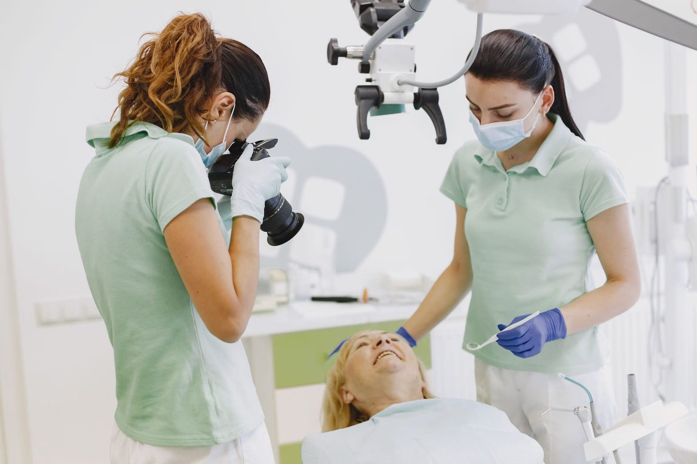
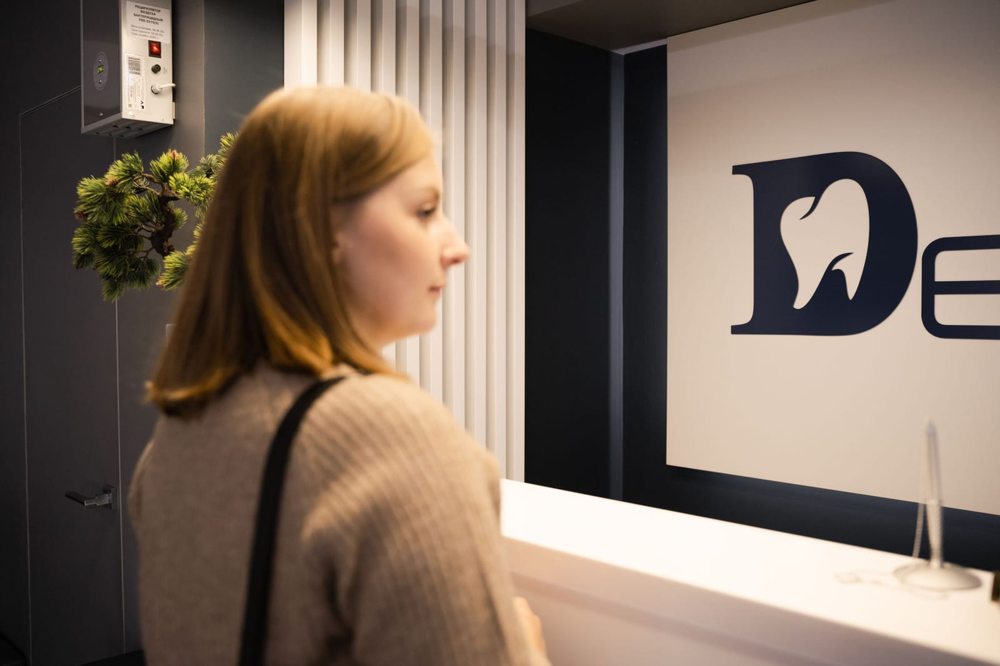

Exam, X-rays and cleaning
The full first visit: charting, a set of images, and a cleaning if your gums are healthy enough to do it the same day.
$248cash, all three
Bay View · Milwaukee, Wisconsin · General & family dentistry
Every treatment here starts with a printed estimate: the code, our fee, what your plan pays, and what you owe. One page, in your hand, before the chair goes back. No surprise at the front desk on the way out.
Mon–Thu 7:00 AM – 6:00 PM Fri 7:00 AM – 1:00 PM Two rooms held daily for toothaches Free lot behind the building
Treatment estimate
Form 01 · page 1 of 1
| Code & procedure | You pay |
|---|---|
| D0150 · Exam | $0 |
| D0210 · X-rays | $0 |
| D1110 · Cleaning | $0 |
| D2392 · Filling, 2 surfaces | $50 |
| Your total, if you do all of it | $50 |
If your plan pays less than this sheet says, the difference is ours, not yours — we file the claim and we eat the gap. If you want to do the filling next month instead, that is a normal answer and nobody will call you about it.
Given before treatment · not after
01 · Why the paper comes first
We have never met anyone who put off a crown because they enjoy toothache. They put it off because nobody would tell them what it costs, and because the last office gave them a number after the work was done.
So we moved the paper to the front. You get the estimate at the chair, printed, with the procedure codes on it — the same codes your insurer uses, so you can call them and check us. Then you decide. Including deciding not to.

The whole visit is built around this moment: the sheet turned around so it faces the patient, not us.
02 · What we do, and what it costs
These are the cash prices, without insurance. With a plan you almost always pay less; the estimate will say exactly how much less before you agree to anything.
The full first visit: charting, a set of images, and a cleaning if your gums are healthy enough to do it the same day.
$248cash, all three
Tooth-coloured composite, matched to the tooth beside it. One surface or four, the price is on the sheet before we start.
$186–$310by number of surfaces
A model is poured here and the crown is milled by a lab in West Allis. Two visits, a temporary in between.
$1,180porcelain, per unit
Deep cleaning by quadrant when the pockets ask for it, then a three-month recall until they close.
$228per quadrant
Simple extractions here; anything that belongs with an oral surgeon goes to one, and we say so on the estimate.
$245simple, per tooth
First visits are a ride in the chair, a count of the teeth and nothing else. Nobody gets held down in this office.
$128child exam & cleaning
03 · Your first visit, in order
We send two pages by text the day before. Nobody should be filling in a clipboard with a sore tooth.
A set of X-rays and a tooth-by-tooth chart, read out loud while a hygienist writes it down. You hear the same words we do.
Alginate, two minutes in the mouth, poured in stone the same afternoon. The models stay here for two years in case something changes.
Everything found, everything it costs, what your plan covers, in what order it should be done and what can wait. On paper.
If your gums need the deeper kind, we say so instead of doing the quick version and calling it done.

A poured model of your own mouth. It is the cheapest object in the building and the one that settles most arguments.
04 · A tooth that hurts today
Not a triage call, not a form — a chair. If we cannot get you out of pain here, we will tell you who can and call them while you are still in the room.

The tray for an emergency visit is short on purpose: find it, stop it, explain it, book the real repair for a day when you can plan for it.
05 · Insurance, and what to do without it
In network with most Wisconsin plans
One flat yearly fee, paid here, no third party
$389 a year
We are in network with Delta Dental of Wisconsin, Aetna, Cigna, MetLife and Ameritas, and we will file out-of-network claims for anything else. Bring the card, or a photo of it.
06 · Who is actually in the building
Nobody here is a rotating associate from a management company. If you liked your hygienist last time, she will be the one who cleans your teeth this time.
Dentist · owner
Marquette, class of 2011. Bought the practice from Dr. Sobczak in 2019 and kept the waiting room chairs, which people had opinions about.
Hygienist
Fifteen years in this chair. Explains what she is doing while she does it, which not everyone wants, so tell her if you would rather she did not.
Office manager · billing
Writes every estimate on this page and argues with insurers for a living. Ask her anything about coverage before you ask anyone else.

Two people at the chair for anything longer than a cleaning — it is faster, and it means somebody is always free to answer you.
07 · The place

The waiting room seats nine and is almost never used, because we run on time. If we are late, someone will come out and tell you by how much.
08 · Questions people actually ask
Call and a person picks up between 7:00 AM and 6:00 PM. If it is out of hours, leave a message — the machine is checked at 7:00 sharp and toothaches get called back first.